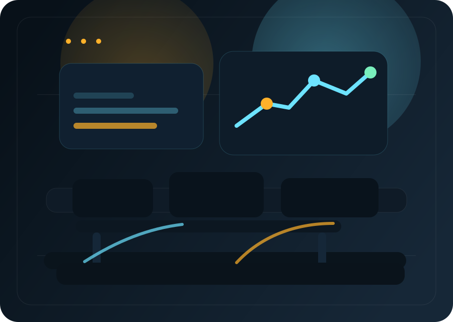
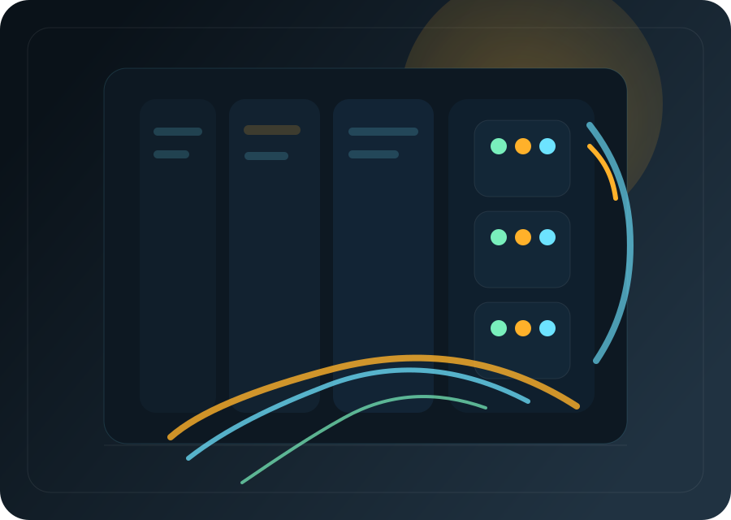
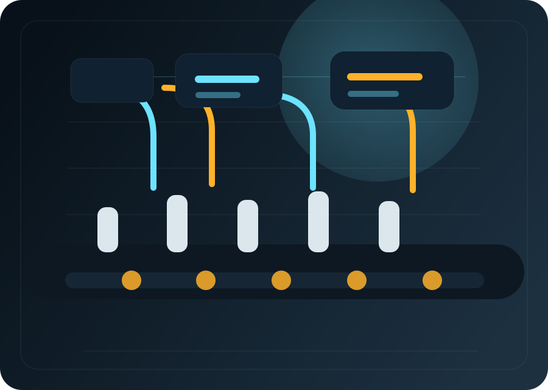
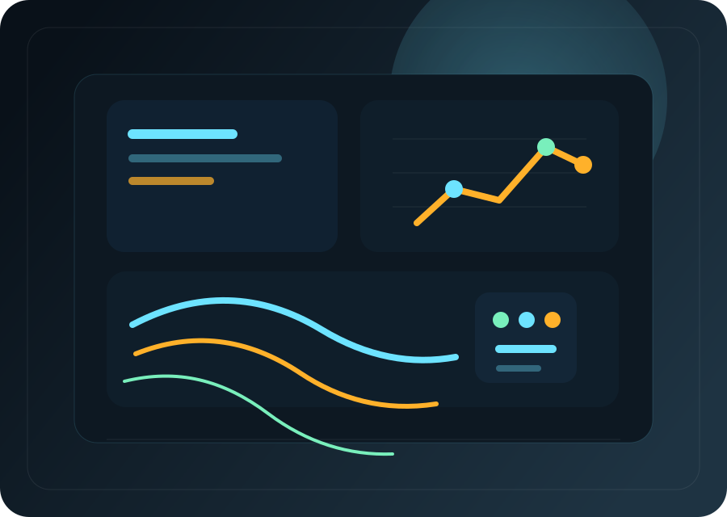
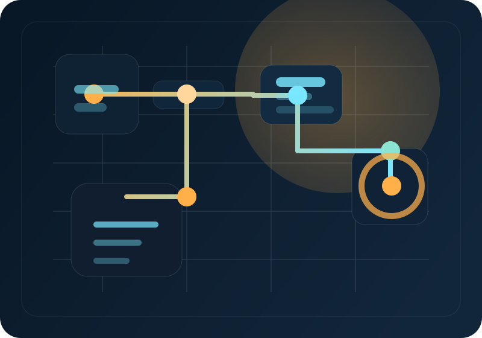
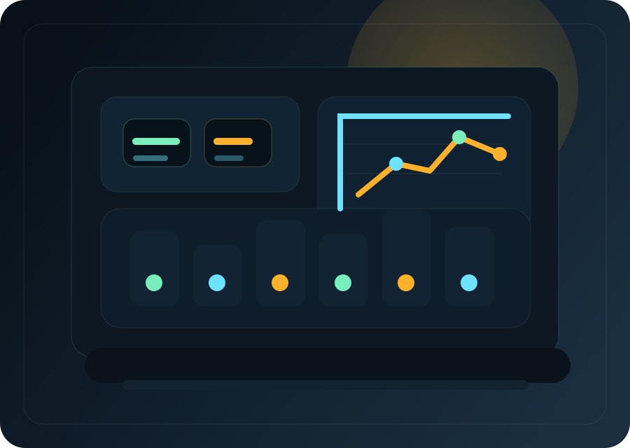
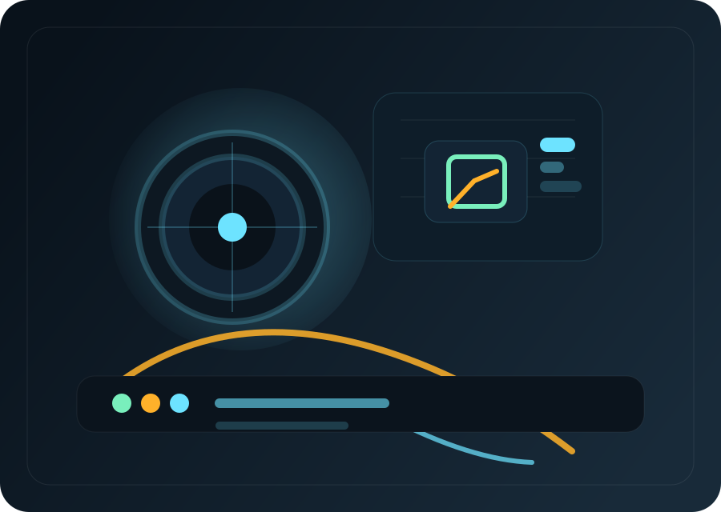

Lire la machine, les signaux et la logique process avant toute intervention.
Portfolio Industriel • Mohammedia, Maroc
Programmer la machine. Superviser la ligne. Fiabiliser le terrain.
Technicien diplômé en automatisation et instrumentation industrielle, je développe une approche orientée terrain où se croisent API Siemens, circuits de commande, instrumentation, supervision IHM, vision industrielle et cybersécurité OT.
Disponible pour stage, alternance ou opportunité junior en automatisme industriel, supervision et environnements OT / IT.
Ce que j'apporte
Séquences, tests, vérification et mise en service pensés pour le terrain réel.
États machine, alarmes et cadence plus lisibles pour l'opérateur et la maintenance.
Vision, scripts techniques et cybersécurité au service d'usages concrets sur le terrain.


Console terrain
- 4 expériences techniques (Automatisme & Cyber)
- 3 réalisations Cyber & OT spécialisées
- 2025 Spécialisation Cybersécurité JobInTech
- IT / OT une logique transversale sans perdre le terrain
01
Positionnement
Un profil pensé pour l'industrie réelle : logique API, lecture process et action terrain.
Mon point fort, c'est le lien entre la logique d'automatisme et la réalité atelier. Mon objectif : des systèmes lisibles, bien câblés, sûrs et réellement exploitables par la production.
Je viens d'une formation fortement ancrée dans l'automatisation et l'instrumentation industrielle. Cela m'a donné une base solide sur les automates, la commande électrique, les capteurs, la régulation, les armoires et les systèmes de supervision.
Sur le terrain, j'ai ensuite travaillé sur des interventions concrètes: diagnostic de pannes, programmation de séquences, mise à jour d'IHM, réglage d'instrumentation, câblage et essais de signaux. Aujourd'hui, j'élargis cet ensemble vers la vision et la cybersécurité OT sans quitter l'univers industriel.



Automatisme
Commande, instrumentation, câblage et validation terrain
API Siemens, armoires, circuits de commande, capteurs, régulation PID, tests, vérification et validation fonctionnelle.

Supervision
IHM, alarmes, cadence et lisibilité pour l'exploitation
Mise à jour d'interfaces pour mieux suivre le process, améliorer la visibilité pour l'exploitation et accélérer le diagnostic.

Ouverture OT / IT
Vision industrielle, scripts techniques et cybersécurité OT
Python, OpenCV, Wireshark, Linux et logique sécurité appliqués à des systèmes industriels connectés.
02
Expérience
Des stages et missions orientés exécution, fiabilisation et compréhension du process.
Ces expériences m'ont permis d'intervenir sur des problématiques concrètes de maintenance, de programmation API, de supervision opérateur et de mise en service.
A2ME • Casablanca
Stagiaire Perfectionnement
- Diagnostic et analyse de pannes sur circuits électriques industriels (relais, contacteurs, sectionneurs).
- Maintenance préventive et corrective des équipements industriels et remplacement de composants défectueux.
- Réglage, calibration et vérification des capteurs et instruments de mesure sur lignes de production.
- Participation à l’amélioration de la disponibilité des équipements et réduction des arrêts de production.
- Application des procédures de sécurité industrielle lors des interventions de maintenance.
SOMATISME • Mohammedia
Technicien Automatisme
- Programmation et mise en service d’automates programmables industriels (Siemens S7-1200 / S7-1500) en langages LADDER, SCL et GRAFCET.
- Développement et modification de programmes d’automatisation pour le contrôle de processus industriels.
- Maintenance des systèmes pneumatiques et hydrauliques utilisés dans les lignes de production automatisées.
- Mise à jour et optimisation des interfaces Homme-Machine (IHM) pour le suivi et le pilotage de production.
- Participation au diagnostic des dysfonctionnements et à l’amélioration de la disponibilité des équipements.
SOMATISME • Mohammedia
Stagiaire Automaticien (PFE)
- Conception et simulation d’un système de remplissage de bouteilles sur TIA Portal V16 avec PLCSIM.
- Programmation d’un automate Siemens pour le contrôle d’un procédé de production automatisé.
- Tests fonctionnels et validation du cycle de production en environnement virtuel.
03
Projets
Réalisations marquantes en Cybersécurité, Web et Automatisme.
Mes projets illustrent ma capacité à sécuriser des infrastructures IT/OT tout en développant des outils modernes et performants.
Projet Cybersécurité – Infrastructure YTech Solutions
Linux • Nginx • PHP • PostgreSQL • Nessus • Nmap • Lynis • GitHub
- Analyse et audit d’une infrastructure réseau avec identification des vulnérabilités.
- Déploiement et sécurisation de deux applications web (commerciale et RH interne).
- Mise en place d’une architecture sécurisée (DMZ, segmentation réseau).
- Hardening Linux et sécurisation web (HTTPS, Nginx, contrôle d’accès).
- Réalisation de tests d’intrusion et amélioration de la posture de sécurité.
Smart Security : IoT & Vision
Python • OpenCV • API Siemens
- Développement d’un système de contrôle d’accès intelligent basé sur la reconnaissance faciale.
- Implémentation d’un module de vision par ordinateur (OpenCV) pour identification en temps réel.
- Gestion des utilisateurs autorisés via base de données et traitement des accès.
- Interfaçage IT/OT entre système de vision et automate industriel.
- Pilotage des accès physiques selon les résultats d’analyse.
- Journalisation et traçabilité des accès pour détection d’événements suspects.
Application Web – Somatisme
Next.js • Vercel • Node.js • API
- Développement et déploiement d’une application web accessible publiquement.
- Mise en place de mesures de sécurité web : validation des entrées, protection des endpoints, gestion des requêtes.
- Implémentation de bonnes pratiques de sécurisation (HTTPS, headers HTTP, contrôle des accès).
- Analyse de la surface d’attaque et renforcement de la sécurité de l’application.
04
Formation
Un parcours hybride entre l'Automatisme Industriel et la Cybersécurité.
2025 - 2026
Ynov Campus / Jobintech
Formation Cybersécurité
Spécialisation en sécurité offensive, durcissement des systèmes et conformité aux standards ISO 27001.
Audit & Pentest
- Réalisation de tests d’intrusion (pentest) : reconnaissance, scan, analyse et exploitation contrôlée.
- Utilisation d’outils professionnels : Nmap, Nessus, Wireshark, Nikto, Lynis.
Hardening & Cloud
- Hardening des systèmes Linux et Windows Server (sécruisation des services, gestion des accès).
- Sécurisation d’infrastructures Cloud (Azure, AWS) : IAM, bonnes pratiques de configuration.
Standards & Scripts
- Application des standards de sécurité (ISO 27001, principe du moindre privilège).
- Développement de scripts Python pour automatisation des tâches de sécurité et analyse de données.
2022 - 2024
ISIM
TS Automatisation & Instrumentation
Formation centrée sur le contrôle-commande, la régulation des processus industriels et la maintenance des systèmes.
API & Conception
- Étude et programmation des automates programmables industriels (API/PLC) pour le contrôle de systèmes automatisés.
- Conception et analyse de systèmes d’automatisation industrielle (chaînes de production, processus industriels).
Régulation & Mesure
- Mise en œuvre des systèmes de régulation industrielle, notamment les boucles de contrôle PID.
- Utilisation et calibration des capteurs et instruments de mesure (température, pression, débit, niveau).
Diagnostic & SCADA
- Analyse du fonctionnement des systèmes automatisés et diagnostic des dysfonctionnements.
- Introduction aux systèmes de supervision industrielle (SCADA) et aux architectures d’automatisation.
Automatisme
TIA Portal
Step 7
WinCC
Siemens S7-1200 / S7-1500
LADDER
SCL
GRAFCET
PID
Profinet
Instrumentation
OT / IT
Python
OpenCV
Wireshark
Linux
Windows Server
Azure
AWS
Pentesting
SQL
Langues
Arabe
Maternel
Français
Courant
Anglais
Technique
05
Contact
Disponible pour une opportunité proche du terrain et du process industriel.
Je recherche des opportunités en automatisme industriel, supervision et environnements OT / IT, avec une préférence pour les projets concrets proches du terrain.